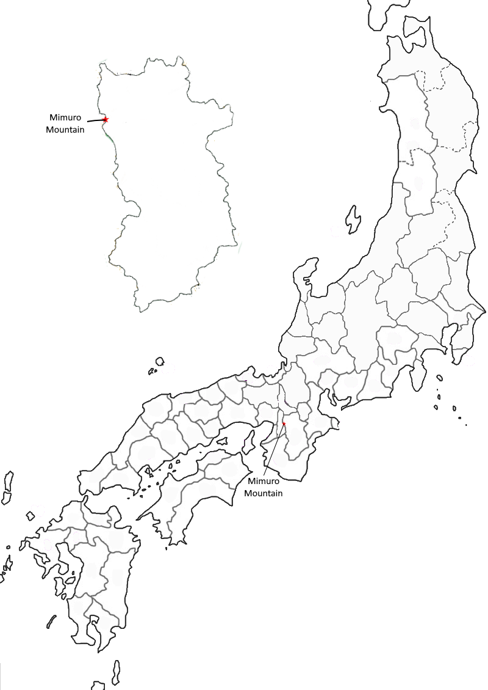

Poem #284 
たつた河もみぢば流る神なびのみむろの山に時雨ふるらし
tatsutagawa
momijiba nagaru
kamunabi no
mimuro no yama ni
shigure fururashi
momijiba nagaru
kamunabi no
mimuro no yama ni
shigure fururashi
Late autumn showers
must be falling at Mimuro,
the divine mountain,
for colored leaves are floating
on the Tatsuta River.
must be falling at Mimuro,
the divine mountain,
for colored leaves are floating
on the Tatsuta River.
Poem #296
神なびのみむろの山を秋ゆけば錦たちきる心地こそすれ
kamunabi no
mimuro no yama o
aki yukeba
nishiki tachikiru
kokochi koso sure
mimuro no yama o
aki yukeba
nishiki tachikiru
kokochi koso sure
"My dress is brocade" -
so I find myself feeling
when of an autumn
I journey on Mimuro,
sacred mountain of the gods.
so I find myself feeling
when of an autumn
I journey on Mimuro,
sacred mountain of the gods.

Background Information
To see on Google Maps, search “Mimuro-yama” instead of Mount Mimuro.
Footnote from Lewis Cook on Poem 284: “Mimuro, a noun meaning "sacred grove" or "dwelling place of the gods," became the name of mountainous area which was the site of Tatsuta Shrine, above the Tatsuta River. Kamunabi (mountains "where gods dwell") refers to the same area, noted for autumn leaves. The poet speculates on the unseen cause of a very visible (and desirable) effect: a brocade of red and yellow leaves covering the Tatsuta River, downstream from Mimuro.”
Footnote from Lewis Cook on Poem 284: “Mimuro, a noun meaning "sacred grove" or "dwelling place of the gods," became the name of mountainous area which was the site of Tatsuta Shrine, above the Tatsuta River. Kamunabi (mountains "where gods dwell") refers to the same area, noted for autumn leaves. The poet speculates on the unseen cause of a very visible (and desirable) effect: a brocade of red and yellow leaves covering the Tatsuta River, downstream from Mimuro.”